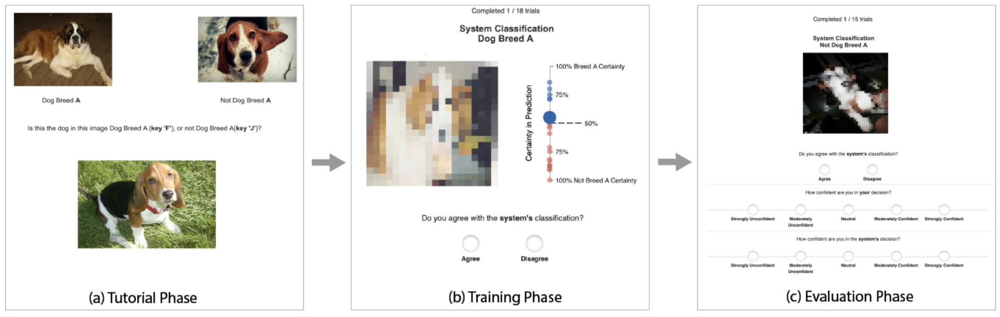
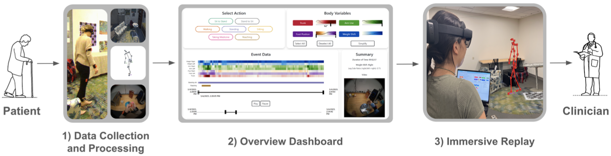
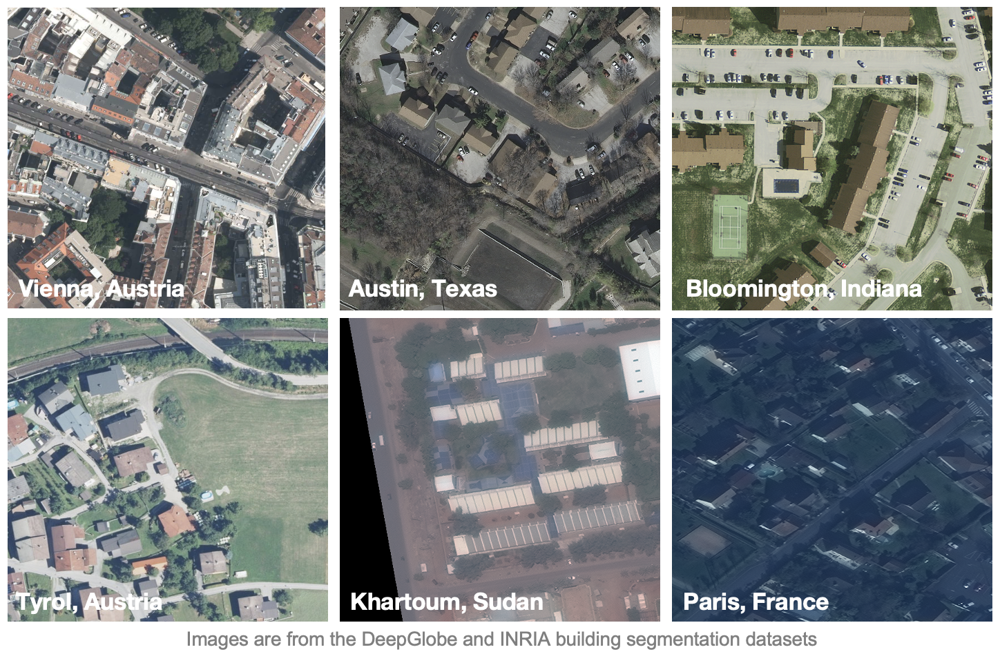
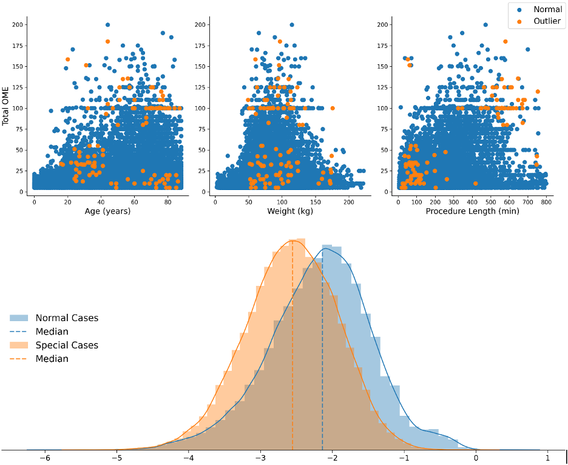
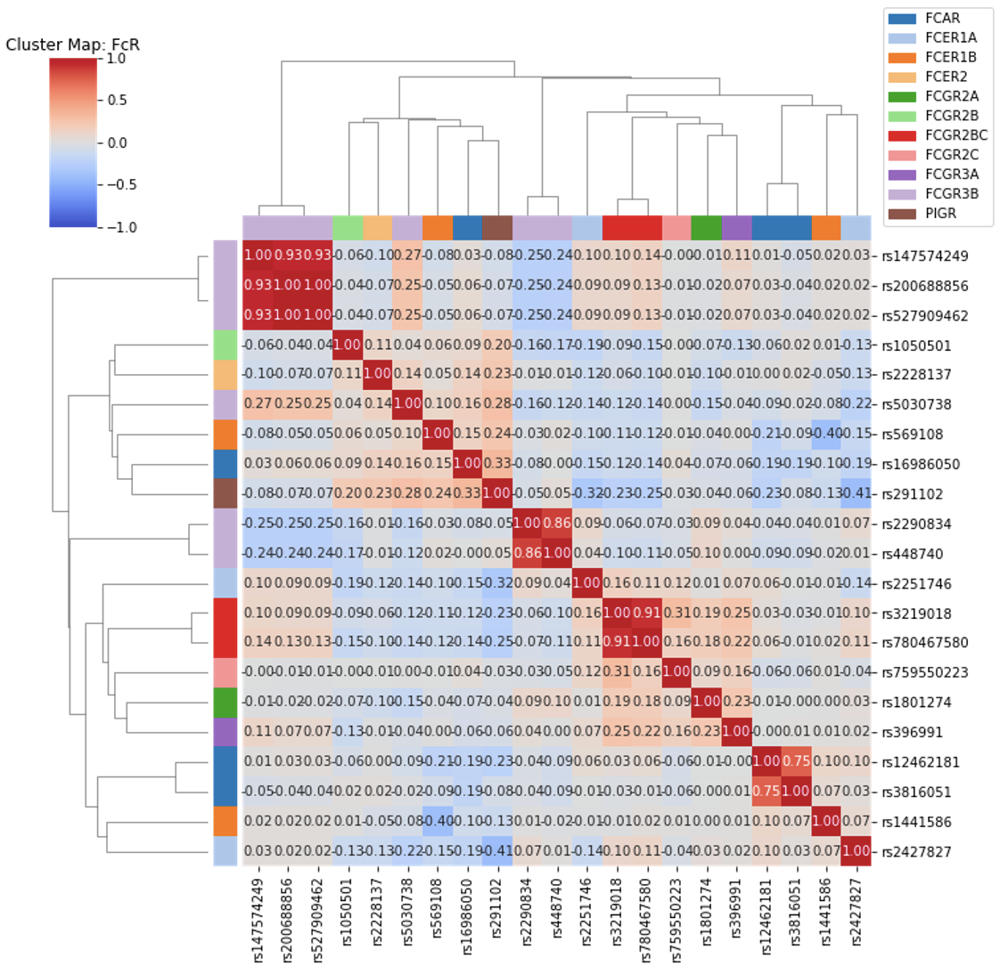

Advisor: Dr. Danielle Albers Szafir
VisuaLab at UNC-Chapel Hill

This empirical study explored the interplay between query policies and visualizations of active learning system certainty in shaping analyst trust and performance in image classification tasks.
Advisor: Dr. Danielle Albers Szafir
VisuaLab at UNC-Chapel Hill

I participated in developing an interactive system that monitors the daily activities of individuals living with Parkinson's disease, integrating augmented reality technology and immersive analytics components.
Advisor: Dr. Kyle Bradbury
Duke Bass Connections Project Team

While satellite imagery is effective in monitoring infrastructure and resources related to the causes and consequences of climate change, automating these approaches has been most successful at the local scale and has required significant amounts of expensive training data. This project investigated how recent advances in AI for computer vision and large language models can be used to overcome both of these hurdles.
Advisor: Dr. Andrea Lane
Duke MIDS Capstone Project Team

We used multiple PyCaret models and changepoint detection techniques to identify the potential risk of opioid diversion, which involves the unauthorized transfer of opioids from legitimate sources to illicit channels. Our work has saved our clients hours of labor by providing them with a list of anesthesia providers that require immediate attention.
Advisor: Dr. Cliburn Chan, Dr. Justin Pollara
Duke Center for AIDS Research

I conducted quantitative research to explore the genetic variation in IgG and Fc receptors, investigating their association with functional antibody responses following HIV vaccination.